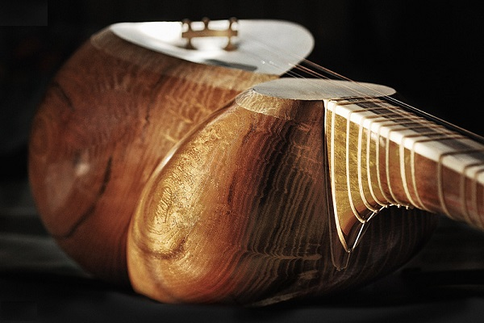

تار
تار از سازهای زهی و ایرانی است که با مضراب نواخته میشود. تار در ایران و برخی مناطق دیگر خاورمیانه مانند تاجیکستان، جمهوری آذربایجان و ارمنستان و گرجستان و دیگر نواحی نزدیک قفقاز برای نواختن موسیقی سنتی این کشورها و بخشها رایج است. واژه تار خودش در فارسی به معنی رشتهاست. هرچند که ممکن است معنی یکسانی در زبانهای تحت تأثیر فارسی یا دیگر زبانهای ایرانی تبار مثل کردی داشته باشد. این باعث شدهاست که کارشناسان ایرانی بر این باور باشند که تار ریشه مشترکی میان همه اقوام ایرانی تبار در جایی که از سوی ایرانیکا با قاطعیت به نام قاره فرهنگی ایرانیان نامیده شده دارد.در گذشته تار ایرانی پنج سیم (یا پنج تار) داشت. غلامحسین درویش یا درویش خان سیم ششمی به آن افزود که همچنان به کار میرود.
تاریخچه تار
تار در لغت ایرانی به معنی زه، سیم و از لحاظ سازشناسی از گروه سازهای زهی مضرابی است. بنابر روایتی تار از زمان فارابی (حدود سال ۲۶۰ هجری – سال ۳۳۹ هجری) موسیقیدان معروف ایرانی وجود داشته و بعد از وی توسط صفی الدین ارموی و دیگران به سمت کمال پیش رفتهاست. بر این اساس نمونه سلف تار مربوط به عهد صفوی (سال ۱۰۸۰ هجری) در تصویر زیر مربوط به نقاشیهای کاخ هشت بهشت اصفهان مشاهده میشود. دو تصویر که یکی در سال ۱۷۷۵ میلادی و دیگری در سال ۱۷۹۰ میلادی در شیراز از تار نقاشی شدهاست نشان میدهد نواختن این ساز در دورهٔ زندیه در شیراز متداول و مرسوم بودهاست. با این همه، نام نوازندهٔ مشخصی از این ساز در منابع دورهٔ زندیه دیده نمیشود و از اینرو، احتمالاً این ساز در آن دوره نام دیگری داشتهاست. سازِ تار با شمایل و مشخصات کنونی (کاسه و نقاره شبیه به دل روبروی هم، با دستهای متصل دارای ۶ سیم طبق تصویر بالا) از زمان قاجار دیده شدهاست. مرتضی حنانه (استاد موسیقی ایرانی) در کتاب گامهای گمشده، تار را ساز ملی ایرانیان میداند. مرحوم روحالله خالقی (استاد موسیقی ایرانی) در کتاب سرگذشت موسیقی میگوید: ساز (تار) بهمراه نام سازهایی دیگر در شعر فرخی سیستانی شاعر ایرانی (۳۷۰–۴۲۹) ذکر شدهاست (هر روز یکی دولت و هر روز یکی غژ * هر روز یکی نزهت و هر روز یکی تار). ساز تار ساخته و پرداخته ذوق ایرانی است (منحنی و قوسهایی که در ساخت تار دیده میشود در خوشنویسی و نقاشی و مینیاتور و معماری ایرانی جاری و ساری است) و طی سالهای متمادی کامل و کاملتر گشتهاست. آخرین اصلاحات توسط درویش خان استاد موسیقی ایرانی(۱۲۵۱تهران_۲ آذر ۱۳۰۵تهران) با افزودن سیم ششم جهت تکمیل و وسعت دامنه صوتی تار انجام پذیرفتهاست. تار دارای ۲۸ پرده است (یعنی کمتر از سه اکتاو). آخرین الگوی منحصربهفرد ساخت تار نیز متعلق به سازگر مشهور ایرانی استاد یحیی دوم (۱۲۵۴–۱۳۱۰ه.ش) میباشد چه به لحاظ شاخص فنی و چه از لحاظ ذوقی همچنان که گره چوب را به شکل متقارن روی کاسه تار (در اصطلاح چهار گل) طراحی مینمودهاست. جنس چوب کاسه تار از درخت توت، دسته آن گردو میباشد.

ساختار تار
کاسهٔ تار بیشتر از کنده کهنه چوب توت ساخته میشود که هرچه این چوب کهنهتر باشد به دلیل خشک بودن تارهای آن چوب تار دارای صدای بهتری خواهد بود. پردهها از جنس روده گوسفند و دسته و پنجه معمولاً از چوب گردو تهیه میشوند. شکل کاسهٔ تار مانند دو دل به هم چسبیده و از پشت شبیه به انسان نشستهای است. تار قفقازی شکل کمی متفاوتی دارد و سیمهای آن بیشتر است. جنس خرک از شاخ بز کوهی است. در دو طرف دسته از استخوان شتر استفاده میشود. از لحاظی ساز تار به سهتار نزدیک است. از لحاظ شیوهٔ نوازندگی زخمهٔ عادی در تار به صورت راست (از بالا به پایین) است ولی در سهتار بالعکس است (از پایین به بالا). همچنین از نظر تعداد پردهها نیز با هم شباهت دارند. صدای تار به دلیل وجود پوستی که روی آن است از شفافیت خاصی برخوردار است برای این پوست معمولاً از پوست بره تودلی یا بزی استفاده میشود. به خصوص سازهایی که ساخت قدیم هستند از شیوهٔ صدای دیگری برخوردارند.